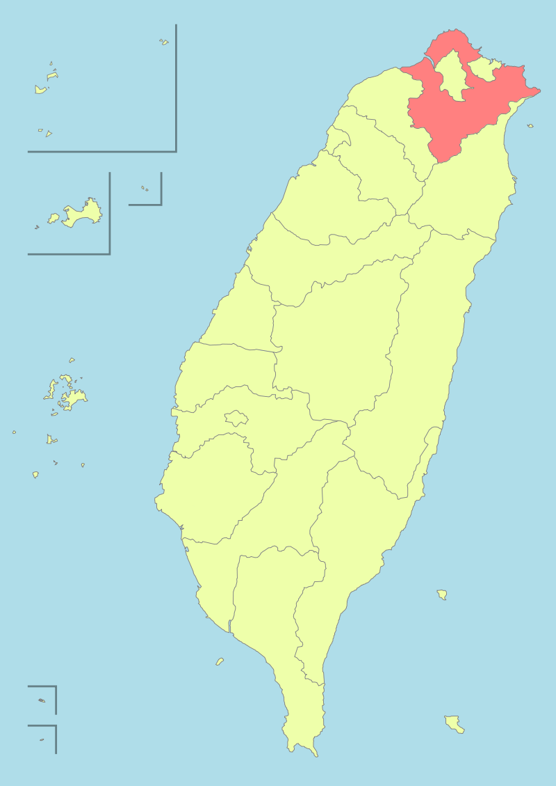

New Taipei City
新北市是中華民國的直轄市之一，2010年由原臺北縣改制而來，人口近四百萬人，為臺灣人口最多的市。全境環繞臺北市，東北則三面環繞基隆市，東南鄰宜蘭縣，西南鄰桃園市；其所轄石門區富貴角地處臺灣本島最北端，貢寮區三貂角地處臺灣本島最東端。全市共劃分為29區，其中政府所在地位於板橋區。
新北市的人口高度集中於淡水河－新店溪左岸的各個行政區，清治時期前與淡水河右岸各自發展；在臺北都會區擴大及升格直轄市與台北市並稱雙北市的雙重效應下，現今的新北市已逐漸發展成以淡新兩河左岸各區為臺北都會區次中心的多核心都市。多數市街地有如臺北都會區的衛星城市或臥城，但工商業發展也有一定規模，不少企業亦以該市為根據地。其有高度都市化的區域，也有鄉間風情與自然山川風貌，地景樣貌多元，人口組成及經濟產業具多樣性，聚集不少從臺灣各地遠赴臺北工作的民眾在此定居生活。

外部連結